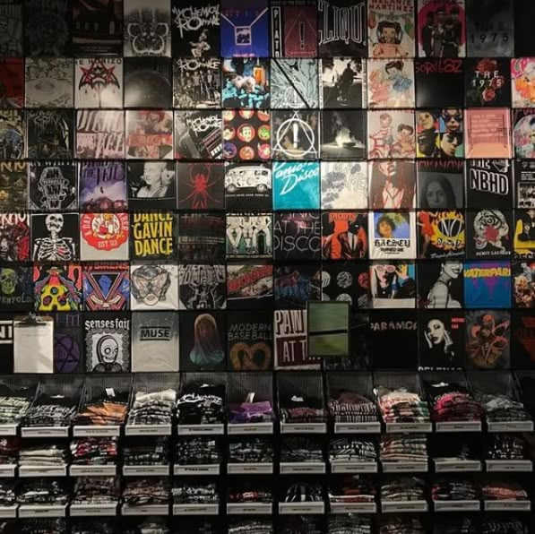

No Future Records bietet eine ausgewählte Auswahl an Vintage-Vinyl, CDs und Merchandise aus der Punk- und Metal-Szene. Der Schwerpunkt liegt auf Originalveröffentlichungen, Klassikern und Raritäten, die nicht mehr regulär erhältlich sind. Ein Großteil unseres Sortiments besteht aus Einzelstücken. Viele Tonträger stammen aus privaten Sammlungen, kleinen Labels oder limitierten Pressungen und sind nur einmal verfügbar. Dadurch verändert sich unser Angebot ständig. Ergänzt wird das Sortiment durch ausgewähltes Merchandise wie Shirts, Patches und Szene-Artikel mit klarem Bezug zu Punk und Metal. Alle Artikel werden von uns geprüft und bewusst ausgewählt, mit Fokus auf Zustand, Herkunft und musikalische Bedeutung. No Future Records richtet sich an alle, die Wert auf Authentizität, Geschichte und Subkultur legen.
Alle unsere Artikel sind nur bei uns vor Ort erhältlich. Wir arbeiten gerade an unserem Onlineshop und bitten dies zu entschuldigen.
24,99€
211,60€
10,56€
499€
21,99€
18,99€
29,35€
132,86€
94,70€
75,20€